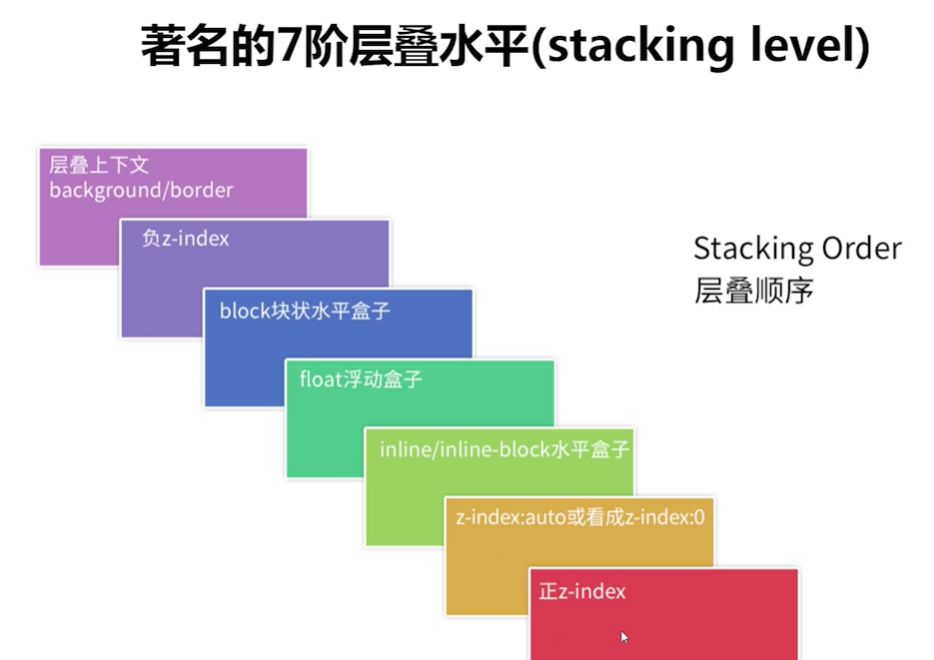

1.为什么会有层叠水平顺序？
2.为什么层叠水平顺序是这样的?
3.为什么inline|inline-block元素会在浮动元素之上？
浮动元素与内联元素的关系
浮动原本设计的作用就是实现文字环绕图片的效果，如果图片和文字发生重叠，显然，是后面的文字要优先显示的，因为，文字比图片重要。
块状元素与内联元素的关系
display:inline-blcok
display:block;
为什么文字会在上面呢?其实这里的背景色覆盖是因为层叠顺序，但是文字覆盖是因为后来居上原则。
 浮动原本设计的作用就是实现文字环绕图片的效果，如果图片和文字发生重叠，显然，是后面的文字要优先显示的，因为，文字比图片重要。
浮动原本设计的作用就是实现文字环绕图片的效果，如果图片和文字发生重叠，显然，是后面的文字要优先显示的，因为，文字比图片重要。
浮动原本设计的作用就是实现文字环绕图片的效果，如果图片和文字发生重叠，显然，是后面的文字要优先显示的，因为，文字比图片重要。
浮动原本设计的作用就是实现文字环绕图片的效果，如果图片和文字发生重叠，显然，是后面的文字要优先显示的，因为，文字比图片重要。